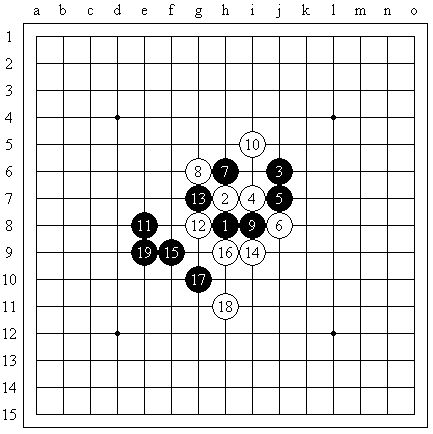
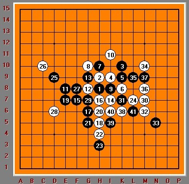

【茗弈】授课内容(五)09全国赛妙手个人对局分析（对手江齐文)
#1 【茗弈】授课内容(五)09全国赛妙手个人对局分析（对手江齐文) 作者：举步回眸浅浅笑 发表时间：2009-10-27 11:41:38
江齐文是一名非常嗜攻的棋手。去年全国赛，我与他就有过对局。那盘棋中，江攻我满盘，我在最终就要防守成功之时出现漏着，遗憾告负。本盘是我与他的第二次对局（我又输了）。我开疏星，对手出人意料地交换（肯定是想执黑前半盘猛攻），5A=13。由于我知道对手是猛攻风格，并且确实有攻击力，所以我有所忌惮，不敢给对手一打。对方的11手让我有些懵，不过我的12还是很得体的。13手比较常规。落14手之前，由于我过于担忧黑在下方的棋形，没有想到14=k6的通型变化。实战14之螅?5的手段已经令白棋感到难受。16手我想过很多防点，无奈都不不令人满意，遂落于h9放手一搏。无奈对手局势太佳，19手之后，白已然无法防守。

然后赛后经过反复拆棋,得知黑棋17手其实是败点,如下图
［ 雅典娜 于 2009-10-27 15:25:10 时花20金币送鲜花一朵］
#2 Re:【茗弈】授课内容(五)09全国赛妙手个人对局分析（对手江齐文) 作者：雅典娜 发表时间：2009-10-27 15:37:13
20手好关键,问题在19手!